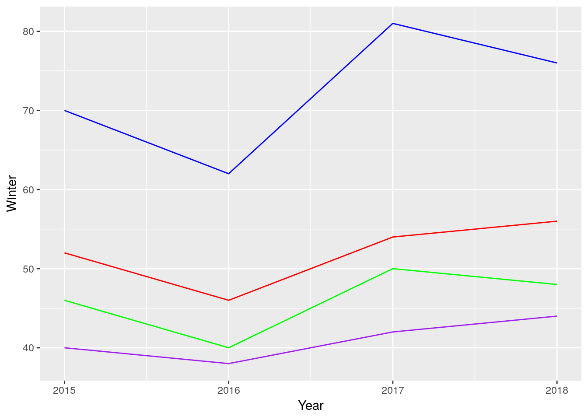
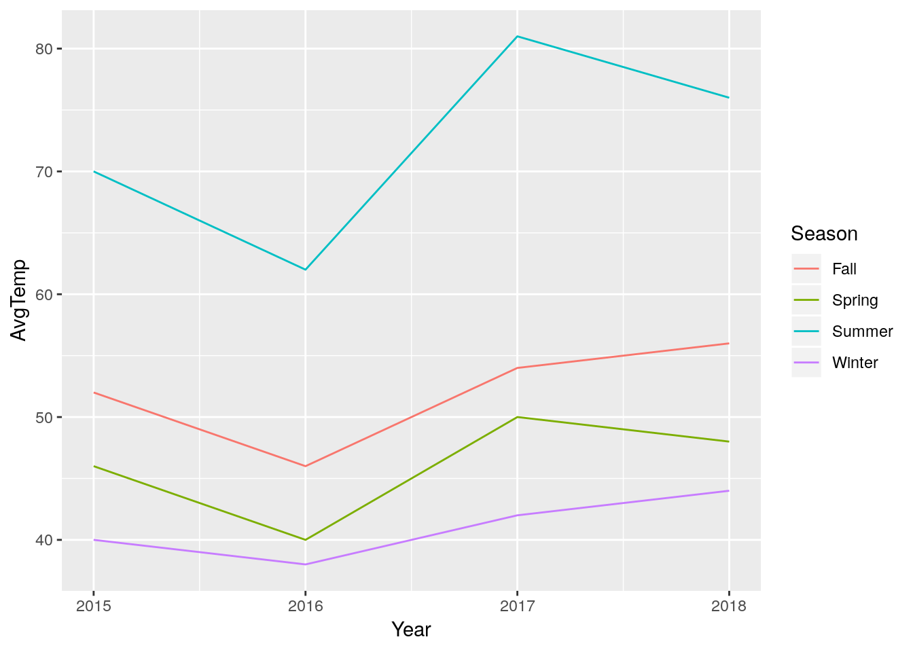
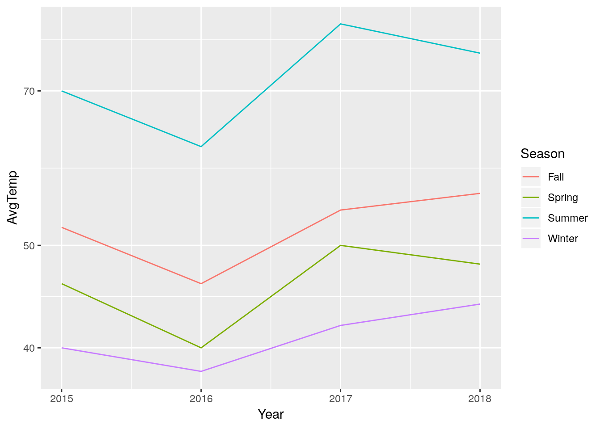

4 Data Wrangling
In God we trust. All others must bring data.— W. Edwards Deming
4.1 Thinking with Data
At the start of this book, I established two essential aims for what this book would accomplish:
The goal is to leave you with the basic essentials of working in R, as well as a strong foundation in thinking like a data analyst that will help you understand how to tackle more complicated problems.
So far, we’ve mostly focused on that first goal, which has obvious measurable outcomes - hopefully, you’ve found that working in R is somewhat easier now than when you first started. However, we haven’t yet touched the second, for one specific reason: analytic thinking is much, much harder to do than learning a language. There are fewer strict rules, leaving much more room for judgement calls, and the world won’t throw an error code if you make a mistake. That being said, it’s a critical skill set to develop if you’re looking to use R effectively.
It’s important to note that there’s a certain amount of art in data science (heck, that’s a book), and this chapter only reflects a certain model of how that art is best applied. You might come across other frameworks that work better for you. However, if you’re relatively new to working with data, this should be a good starting point for you to work from.
4.2 The Data Analytics Model
My personal preferred model is very simple, with four steps:
- Wrangle your data
- Explore the data
- Build models from the data
- Communicate your results
This is a slightly modified version of Peng and Matsui’s model, and it bears resemblance to Grolemund and Wickham’s version. This makes sense - these models are all different ways of describing the same processes, after all. We’re going to dedicate a chapter to each of these steps, starting from the top with data wrangling.
I’d also like to note that these steps assume you’ve already decided what problem you’re looking to solve and how you might go about it. Despite the best promises of pundits and pushers worldwide, Big Datatm cannot solve every challenge in the world, and just poking around any dataset you’ve been given might stir up some incorrect or misguided conclusions.
4.3 Wrangle
However, if you know what problem you’re looking to solve, your first step is gathering the right data to start identifying possible solutions. I’m not going to pretend that I can speak to what that gathering might look like for you - the steps you’ll go through to get your data are much different if you’re working in sciences versus the corporate world, and differ greatly even between various disciplines. What I can say, though, is that most data found in the wild contains a number of features that make it harder to analyze with computer software. Your data might be stored in a weird format, have missing or incorrect values, or be so unstructured that computer analyses don’t understand how to parse it - for instance, this is how a lot of text data is originally gathered. We’ll generally be working with structured data throughout this course - the sort of data you could put into a spreadsheet - but there are plenty of resources on how to deal with unstructured data if that’s an area you find yourself interested in.
However, even our structured data will often not be in the ideal format for our desired analysis. As such, we have to spend our time wrangling the data (sometimes referred to as munging, though that term is falling out of favor) to get it into the shape we want it. This is often the most time consuming part of your work - estimates vary, but wrangling usually makes up 70-80% of the time spent on an analysis! Luckily enough, there are a number of versatile tools designed for wrangling our data which will take a lot of the trouble out of the process.
4.3.1 Tidy Data
I mentioned earlier that we’d be primarily working with structured data, like you could put into a spreadsheet. In fact, we’ll be working with one specific type of structured data, known as rectangular data. This is the term used for that spreadsheet-esque data format, where data is neatly kept in columns and rows. There are other, more complex data structures that we could use, but we won’t need them in this course.
Instead, in this course, we’ll almost always be working with a very specific type of rectangular data known as tidy data. Tidy dataframes always take the same shape:
## Registered S3 methods overwritten by 'ggplot2':
## method from
## [.quosures rlang
## c.quosures rlang
## print.quosures rlang## Registered S3 method overwritten by 'rvest':
## method from
## read_xml.response xml2## ── Attaching packages ─────────────────────────────────────────────────────────────────────────────────────────────── tidyverse 1.2.1 ──## ✔ ggplot2 3.1.1 ✔ purrr 0.3.2
## ✔ tibble 2.1.1 ✔ dplyr 0.8.0.1
## ✔ tidyr 0.8.3 ✔ stringr 1.4.0
## ✔ readr 1.3.1 ✔ forcats 0.4.0## ── Conflicts ────────────────────────────────────────────────────────────────────────────────────────────────── tidyverse_conflicts() ──
## ✖ dplyr::filter() masks stats::filter()
## ✖ dplyr::lag() masks stats::lag()## Warning in kableExtra::kable_styling(.): Please specify format in kable.
## kableExtra can customize either HTML or LaTeX outputs. See https://
## haozhu233.github.io/kableExtra/ for details.| . | Variable_1 | Variable_2 | Variable… | Variable_n |
|---|---|---|---|---|
| Observation 1 | Value | Value | Value | Value |
| Observation 2 | Value | Value | Value | Value |
| … | … | … | … | … |
| Observation n | Value | Value | Value | Value |
Tidy data is organized as follows:
- Each column is a single variable
- Each row is a single observation
- Each cell is a single value
You can’t expect most data you encounter in the wild to already be tidy - but that’s why data workers make the big bucks. Luckily enough, there are tools designed to get you from untidy to tidy data easily, so you can then follow up with the fun parts of analyses. We’ll be working
4.3.2 Tidying Data
As you might guess from the name, the tidyverse is specifically designed to work with tidy datasets. Let’s load it now:
library(tidyverse)By storing all data in a tidy format, we’re able to quickly apply the same sets of tools to multiple different types of data. For instance, imagine a dataframe of seasonal temperatures, built as such:
SeasonalTemps <- data.frame(Year = c(2015, 2016, 2017, 2018),
Winter = c(40, 38, 42, 44),
Spring = c(46, 40, 50, 48),
Summer = c(70, 62, 81, 76),
Fall = c(52, 46, 54, 56))
SeasonalTemps## Year Winter Spring Summer Fall
## 1 2015 40 46 70 52
## 2 2016 38 40 62 46
## 3 2017 42 50 81 54
## 4 2018 44 48 76 56(By the way, if you’re working in notebooks, I’d suggest typing each of these blocks of code into their own chunk - press Ctrl/Cmd + Alt + I in order to quickly add a new code chunk to your document.)
This dataframe makes some sense - it’s pretty easy to understand as a human reader, and would probably be a good layout for a printed table. But the problems with this format become obvious when we, for instance, try to graph the data:
ggplot(SeasonalTemps, aes(x = Year)) +
geom_line(aes(y = Winter), color = "purple") +
geom_line(aes(y = Spring), color = "green") +
geom_line(aes(y = Summer), color = "blue") +
geom_line(aes(y = Fall), color = "red") What a mess! That took far too long to type - a good general rule of thumb is that if you have to repeat yourself more than twice to do something, there’s a better way to do it. And, even after all our effort, our graph doesn’t have a legend, and the Y axis is labeled wrong.
This is a good time for us to use those tools I mentioned earlier, to turn our data tidy! Luckily enough, the tidyverse contains a package designed for making our data tidier - called, helpfully enough, tidyr. We already loaded this package when we called the tidyverse earlier.
tidyr provides two essential functions for “reshaping” the data - changing back and forth between the wide format we used above and a long format, easier used by our functions. To change our SeasonalTemps data to a long format, we can use the gather() function. This function gathers values stores in multiple columns into a single variable, and makes another variable - the key variable - representing what column the data was originally in.
gather() takes three important arguments:
data, the dataframe to gather
key, what to name the key column
value, what to name the column data was merged into
Additionally, we can specify columns that we want to preserve in the new, long dataframe by putting -ColumnName at the end of the function.
What this looks like for our seasonal data is something like this:
LongTemps <- gather(data = SeasonalTemps, key = Season, value = AvgTemp, -Year)
LongTemps## Year Season AvgTemp
## 1 2015 Winter 40
## 2 2016 Winter 38
## 3 2017 Winter 42
## 4 2018 Winter 44
## 5 2015 Spring 46
## 6 2016 Spring 40
## 7 2017 Spring 50
## 8 2018 Spring 48
## 9 2015 Summer 70
## 10 2016 Summer 62
## 11 2017 Summer 81
## 12 2018 Summer 76
## 13 2015 Fall 52
## 14 2016 Fall 46
## 15 2017 Fall 54
## 16 2018 Fall 56Note that you don’t have to type data =, key =, and value = - if you don’t, R assumes that you’ve listed the arguments in this order.
This format makes graphing significantly easier:
ggplot(LongTemps, aes(x = Year, y = AvgTemp, color = Season)) +
geom_line()
If, after all our hard work, we want to get back to our original wide format, we can undo our gather() using spread(). Again, I’m giving spread a data, key, and value argument - but this time, the function is making a new column for each value of our key:
WideTemps <- spread(LongTemps, Season, AvgTemp)
WideTemps## Year Fall Spring Summer Winter
## 1 2015 52 46 70 40
## 2 2016 46 40 62 38
## 3 2017 54 50 81 42
## 4 2018 56 48 76 44This new dataframe isn’t quite the same as our original - the columns are now in alphabetical order! If we wanted to rearrage them, I find the easiest way is using the select() function from dplyr(), another package in the tidyverse. By giving select() an argument for data and a vector of column names, we can rearrange the order the columns appear:
OrderWideTemps <- select(WideTemps, c(Year, Winter, Spring, Summer, Fall))
OrderWideTemps## Year Winter Spring Summer Fall
## 1 2015 40 46 70 52
## 2 2016 38 40 62 46
## 3 2017 42 50 81 54
## 4 2018 44 48 76 56When doing this, though, we have to be careful we don’t accidentally forget a column:
select(WideTemps, c(Year, Winter, Spring, Fall))## Year Winter Spring Fall
## 1 2015 40 46 52
## 2 2016 38 40 46
## 3 2017 42 50 54
## 4 2018 44 48 56Although, if we wanted to drop a column, we can do so by using a - sign:
select(WideTemps, -Summer)## Year Fall Spring Winter
## 1 2015 52 46 40
## 2 2016 46 40 38
## 3 2017 54 50 42
## 4 2018 56 48 444.3.3 Separating Values
Another way many datasets break the tidy format is by storing more than one value in a cell. For instance, say we had a dataframe of horse race results from three races, where the results were all written in the same column:
df <- tibble(Horses = c("A", "B", "C"),
Results = c("1-2-3", "3-1-2", "2-3-1"),
TotalMinutes = c(3, 3, 3),
TotalSeconds = c(12, 44, 15))
df## # A tibble: 3 x 4
## Horses Results TotalMinutes TotalSeconds
## <chr> <chr> <dbl> <dbl>
## 1 A 1-2-3 3 12
## 2 B 3-1-2 3 44
## 3 C 2-3-1 3 15This makes some amount of sense as a human reading it, but makes it really hard to do any sort of analysis. So we can use the separate() command from tidyr to split that Results column into three columns, one per race.
separate() needs at minimum four arguments to work properly:
data, the dataframe we’re operating on,col, the name of the column we’re splitting up,into, a character vector (that you’d create usingc()) of the names you want to use for the new columns, andsep, the character that separates each of your values (in this case,"-").
Altogether, that gives us a function that works something like this:
df2 <- separate(df, Results, c("FirstRace", "SecondRace", "ThirdRace"), sep = "-")
df2## # A tibble: 3 x 6
## Horses FirstRace SecondRace ThirdRace TotalMinutes TotalSeconds
## <chr> <chr> <chr> <chr> <dbl> <dbl>
## 1 A 1 2 3 3 12
## 2 B 3 1 2 3 44
## 3 C 2 3 1 3 15We can also see that there are some times, split into two columns (minutes and seconds) off to the right side of the table. If we’d rather those be in a single column, we can use the unite() function. This function works pretty similarly to separate(), with one important difference: while in separate(), the second argument was the column to be split, in unite() the second argument is the name of the column you want to combine values into:
unite(df2, TotalTime, TotalMinutes, TotalSeconds, sep = ":")## # A tibble: 3 x 5
## Horses FirstRace SecondRace ThirdRace TotalTime
## <chr> <chr> <chr> <chr> <chr>
## 1 A 1 2 3 3:12
## 2 B 3 1 2 3:44
## 3 C 2 3 1 3:154.4 The Pipe
Looking back to our weather data, we can pick out a common problem facing young analysts. At this point, we’ve created four dataframes - SeasonalTemps, LongTemps, WideTemps, and OrderedWideTemps - which all contain the same data. When repeatedly making similar but different dataframes, it can be hard to keep track of which object has which data - and it can be hard to keep coming up with simple, descriptive names, too. One solution could be to keep overwriting the same object with the new data:
a <- 10
a <- a*2
a <- sqrt(a)But this breaks our rule - that if you have to repeat yourself more than twice, there’s a better way to do it. Plus, if you make a mistake while writing over a value that had your original data in it, you have to start all over again - assuming that your data was saved anywhere else!
You could also try and do it all in a single statement:
a <- sqrt(10*2)But with bigger demands, this gets more complicated and harder to read:
unite(
(separate
(df,
Results,
c("FirstRace", "SecondRace", "ThirdRace"),
sep = "-")),
TotalTime,
TotalMinutes,
TotalSeconds,
sep = ":")## # A tibble: 3 x 5
## Horses FirstRace SecondRace ThirdRace TotalTime
## <chr> <chr> <chr> <chr> <chr>
## 1 A 1 2 3 3:12
## 2 B 3 1 2 3:44
## 3 C 2 3 1 3:15This is an example of what we call nested functions, where one function (in this case, separate()) is nested inside of another (unite()). These work like you might expect from your past algebra classes - f(g(x)) is the same as (f * g)(x). But even knowing that, this sort of code is what nightmares are born from!
Luckily, the tidyverse also introduces a new operator %>%, called the pipe, in the package magrittr. What the pipe does is pretty intuitive - it takes the output of whatever’s on the left side of the pipe, and uses it as the first input to whatever’s on the right side. For instance:
Numbers <- c(5,10,15,20,25)
Numbers %>%
mean()## [1] 15Since all of the tidyverse functions take data as their first argument, this lets us chain together multiple functions and skip those assignment steps without having to nest functions inside of each other:
LongTemps %>%
spread(Season, AvgTemp) %>%
select(-Summer)## Year Fall Spring Winter
## 1 2015 52 46 40
## 2 2016 46 40 38
## 3 2017 54 50 42
## 4 2018 56 48 44This makes our code much more easy to understand than constantly using the <- operator, plus it’s an improved way to perform multiple steps in a way that’s easy to read and harder to make serious mistakes doing.
Even when a function doesn’t have data as its first input, you can still use a pipe by typing data = . into the function:
LongTemps %>%
spread(data = ., Season, AvgTemp) %>%
select(-Summer)## Year Fall Spring Winter
## 1 2015 52 46 40
## 2 2016 46 40 38
## 3 2017 54 50 42
## 4 2018 56 48 44And pipes work well with ggplot2, too:
LongTemps %>%
ggplot(aes(x = Year, y = AvgTemp, color = Season)) +
geom_line() (Note the change from %>% to + once you’re inside the graph-building process - ggplot was designed before its creator learned to love the pipe, and as such uses + to combine steps.)
4.5 Data Transformations
4.5.1 Mutate
The pipe becomes useful when we want to transform our data itself for a graph, rather than transform the axes. For example, remember how we made our log-log graph last chapter?
LongTemps %>%
ggplot(aes(x = Year, y = AvgTemp, color = Season)) +
geom_line() +
scale_y_log10()
This is useful, but ggplot only has a certain number of transformations built in (type ?scale_y_continuous() for more info). Additionally, sometimes we’ll want to transform our data for analyses - not just graphing. For this purpose, we can use dplyr’s mutate() function. Mutate takes three arguments: the dataframe (which it can get from %>%), the name of your new column, and what value the new column should have. Say, for example, we wanted to multiply our average temperatures by two:
LongTemps %>%
mutate(TwiceTemp = AvgTemp * 2)## Year Season AvgTemp TwiceTemp
## 1 2015 Winter 40 80
## 2 2016 Winter 38 76
## 3 2017 Winter 42 84
## 4 2018 Winter 44 88
## 5 2015 Spring 46 92
## 6 2016 Spring 40 80
## 7 2017 Spring 50 100
## 8 2018 Spring 48 96
## 9 2015 Summer 70 140
## 10 2016 Summer 62 124
## 11 2017 Summer 81 162
## 12 2018 Summer 76 152
## 13 2015 Fall 52 104
## 14 2016 Fall 46 92
## 15 2017 Fall 54 108
## 16 2018 Fall 56 112You can make multiple columns in the same mutate() call, even referring to columns made earlier in the same block of code:
LongTemps %>%
mutate(TwiceTemp = AvgTemp * 2,
TwiceSquaredTemp = TwiceTemp^2,
YearSeason = paste(Year, Season))## Year Season AvgTemp TwiceTemp TwiceSquaredTemp YearSeason
## 1 2015 Winter 40 80 6400 2015 Winter
## 2 2016 Winter 38 76 5776 2016 Winter
## 3 2017 Winter 42 84 7056 2017 Winter
## 4 2018 Winter 44 88 7744 2018 Winter
## 5 2015 Spring 46 92 8464 2015 Spring
## 6 2016 Spring 40 80 6400 2016 Spring
## 7 2017 Spring 50 100 10000 2017 Spring
## 8 2018 Spring 48 96 9216 2018 Spring
## 9 2015 Summer 70 140 19600 2015 Summer
## 10 2016 Summer 62 124 15376 2016 Summer
## 11 2017 Summer 81 162 26244 2017 Summer
## 12 2018 Summer 76 152 23104 2018 Summer
## 13 2015 Fall 52 104 10816 2015 Fall
## 14 2016 Fall 46 92 8464 2016 Fall
## 15 2017 Fall 54 108 11664 2017 Fall
## 16 2018 Fall 56 112 12544 2018 FallNotice I used a new function, paste(), for that last column. Similarly to unite(), this function pastes together values into a single cell. However, unlike unite(), it can use other values in a dataframe, vectors, or strings. For instance:
LongTemps %>%
mutate(YearSeason = paste("The", Season, "of", Year))## Year Season AvgTemp YearSeason
## 1 2015 Winter 40 The Winter of 2015
## 2 2016 Winter 38 The Winter of 2016
## 3 2017 Winter 42 The Winter of 2017
## 4 2018 Winter 44 The Winter of 2018
## 5 2015 Spring 46 The Spring of 2015
## 6 2016 Spring 40 The Spring of 2016
## 7 2017 Spring 50 The Spring of 2017
## 8 2018 Spring 48 The Spring of 2018
## 9 2015 Summer 70 The Summer of 2015
## 10 2016 Summer 62 The Summer of 2016
## 11 2017 Summer 81 The Summer of 2017
## 12 2018 Summer 76 The Summer of 2018
## 13 2015 Fall 52 The Fall of 2015
## 14 2016 Fall 46 The Fall of 2016
## 15 2017 Fall 54 The Fall of 2017
## 16 2018 Fall 56 The Fall of 2018Anyway.
If you’re transforming your data and only want to preserve your new columns, use transmute():
LongTemps %>%
mutate(TwiceTemp = AvgTemp * 2) %>%
transmute(AvgTemp = AvgTemp,
TwiceSquaredTemp = TwiceTemp^2,
YearSeason = paste(Year, Season))## AvgTemp TwiceSquaredTemp YearSeason
## 1 40 6400 2015 Winter
## 2 38 5776 2016 Winter
## 3 42 7056 2017 Winter
## 4 44 7744 2018 Winter
## 5 46 8464 2015 Spring
## 6 40 6400 2016 Spring
## 7 50 10000 2017 Spring
## 8 48 9216 2018 Spring
## 9 70 19600 2015 Summer
## 10 62 15376 2016 Summer
## 11 81 26244 2017 Summer
## 12 76 23104 2018 Summer
## 13 52 10816 2015 Fall
## 14 46 8464 2016 Fall
## 15 54 11664 2017 Fall
## 16 56 12544 2018 FallNote how AvgTemp is present in the new table while TwiceTemp is not, due to the former being included in the transmute() call.
4.5.2 Tibbles
As I mentioned earlier, data in R is stored in dataframes. However, you may have noticed that the dataframe outputs from tidyverse functions look pretty different in your R session (I’d even say nicer) than our raw datasets! That’s because of another useful tidyverse package, tibble.
Of course, the outputs in this book are pretty much the same - the technology I’m using to publish this isn’t quite that advanced, yet.
We don’t need to get too far into the mechanics of this package - if you load the tidyverse, any new dataframes you make will be converted into tibbles by default. If you want to force a dataframe into this format, use as.tibble(); if you need the basic dataframe, use as.data.frame().
4.5.3 Subsetting Data
Let’s go back to our iris dataset. I’m going to turn it into a tibble and then view it:
iris <- as.tibble(iris)## Warning: `as.tibble()` is deprecated, use `as_tibble()` (but mind the new semantics).
## This warning is displayed once per session.iris## # A tibble: 150 x 5
## Sepal.Length Sepal.Width Petal.Length Petal.Width Species
## <dbl> <dbl> <dbl> <dbl> <fct>
## 1 5.1 3.5 1.4 0.2 setosa
## 2 4.9 3 1.4 0.2 setosa
## 3 4.7 3.2 1.3 0.2 setosa
## 4 4.6 3.1 1.5 0.2 setosa
## 5 5 3.6 1.4 0.2 setosa
## 6 5.4 3.9 1.7 0.4 setosa
## 7 4.6 3.4 1.4 0.3 setosa
## 8 5 3.4 1.5 0.2 setosa
## 9 4.4 2.9 1.4 0.2 setosa
## 10 4.9 3.1 1.5 0.1 setosa
## # … with 140 more rowsIf we only wanted to work with part of this dataset, R gives us a lot of options to subset the data. For instance, if we only wanted the first column containing sepal length, we could type this:
iris[, 1]## # A tibble: 150 x 1
## Sepal.Length
## <dbl>
## 1 5.1
## 2 4.9
## 3 4.7
## 4 4.6
## 5 5
## 6 5.4
## 7 4.6
## 8 5
## 9 4.4
## 10 4.9
## # … with 140 more rowsIf we wanted the first row, meanwhile, we’d type this:
iris[1, ]## # A tibble: 1 x 5
## Sepal.Length Sepal.Width Petal.Length Petal.Width Species
## <dbl> <dbl> <dbl> <dbl> <fct>
## 1 5.1 3.5 1.4 0.2 setosaIf we wanted several rows, we can specify them with c() or, if they’re consecutive, :. For instance:
iris[c(1,2,3,4), ]## # A tibble: 4 x 5
## Sepal.Length Sepal.Width Petal.Length Petal.Width Species
## <dbl> <dbl> <dbl> <dbl> <fct>
## 1 5.1 3.5 1.4 0.2 setosa
## 2 4.9 3 1.4 0.2 setosa
## 3 4.7 3.2 1.3 0.2 setosa
## 4 4.6 3.1 1.5 0.2 setosairis[1:4, ]## # A tibble: 4 x 5
## Sepal.Length Sepal.Width Petal.Length Petal.Width Species
## <dbl> <dbl> <dbl> <dbl> <fct>
## 1 5.1 3.5 1.4 0.2 setosa
## 2 4.9 3 1.4 0.2 setosa
## 3 4.7 3.2 1.3 0.2 setosa
## 4 4.6 3.1 1.5 0.2 setosaAnd if we wanted the value in the first row of the first column, we’d type this:
iris[1,1]## # A tibble: 1 x 1
## Sepal.Length
## <dbl>
## 1 5.1The pattern should be clear now - inside of the braces, you type the row number, a comma, and then the column number. Notice that [] always gives us a tibble (or dataframe) back. If we wanted a vector, we could use [[]]:
iris[[1, 1]]## [1] 5.1If we want to use column names instead of numbers, we could use $ in the place of [[]] - note that this always returns a vector, not a dataframe:
iris$Sepal.Length## [1] 5.1 4.9 4.7 4.6 5.0 5.4 4.6 5.0 4.4 4.9 5.4 4.8 4.8 4.3 5.8 5.7 5.4
## [18] 5.1 5.7 5.1 5.4 5.1 4.6 5.1 4.8 5.0 5.0 5.2 5.2 4.7 4.8 5.4 5.2 5.5
## [35] 4.9 5.0 5.5 4.9 4.4 5.1 5.0 4.5 4.4 5.0 5.1 4.8 5.1 4.6 5.3 5.0 7.0
## [52] 6.4 6.9 5.5 6.5 5.7 6.3 4.9 6.6 5.2 5.0 5.9 6.0 6.1 5.6 6.7 5.6 5.8
## [69] 6.2 5.6 5.9 6.1 6.3 6.1 6.4 6.6 6.8 6.7 6.0 5.7 5.5 5.5 5.8 6.0 5.4
## [86] 6.0 6.7 6.3 5.6 5.5 5.5 6.1 5.8 5.0 5.6 5.7 5.7 6.2 5.1 5.7 6.3 5.8
## [103] 7.1 6.3 6.5 7.6 4.9 7.3 6.7 7.2 6.5 6.4 6.8 5.7 5.8 6.4 6.5 7.7 7.7
## [120] 6.0 6.9 5.6 7.7 6.3 6.7 7.2 6.2 6.1 6.4 7.2 7.4 7.9 6.4 6.3 6.1 7.7
## [137] 6.3 6.4 6.0 6.9 6.7 6.9 5.8 6.8 6.7 6.7 6.3 6.5 6.2 5.9The $ is really helpful in using other base R functions:
mean(iris$Sepal.Length)## [1] 5.843333sd(iris$Sepal.Length)## [1] 0.8280661cor.test(iris$Sepal.Length, iris$Sepal.Width)##
## Pearson's product-moment correlation
##
## data: iris$Sepal.Length and iris$Sepal.Width
## t = -1.4403, df = 148, p-value = 0.1519
## alternative hypothesis: true correlation is not equal to 0
## 95 percent confidence interval:
## -0.27269325 0.04351158
## sample estimates:
## cor
## -0.1175698(Note that “cor.test()” runs Pearson’s correlation test for whatever vectors you feed it - more on that test later, or here).
And $ also lets us filter our data with conditionals - getting values that are equal to something, larger or smaller than it, and so on. For instance, if we want a dataframe (so []) where the rows ([, ]) all have a Species value of (==) “setosa”:
iris[iris$Species == "setosa", ]## # A tibble: 50 x 5
## Sepal.Length Sepal.Width Petal.Length Petal.Width Species
## <dbl> <dbl> <dbl> <dbl> <fct>
## 1 5.1 3.5 1.4 0.2 setosa
## 2 4.9 3 1.4 0.2 setosa
## 3 4.7 3.2 1.3 0.2 setosa
## 4 4.6 3.1 1.5 0.2 setosa
## 5 5 3.6 1.4 0.2 setosa
## 6 5.4 3.9 1.7 0.4 setosa
## 7 4.6 3.4 1.4 0.3 setosa
## 8 5 3.4 1.5 0.2 setosa
## 9 4.4 2.9 1.4 0.2 setosa
## 10 4.9 3.1 1.5 0.1 setosa
## # … with 40 more rowsNote that the species name is in quotes, because it’s a character string. We don’t have to do that for numeric values:
iris[iris$Sepal.Length > 7.5, ]## # A tibble: 6 x 5
## Sepal.Length Sepal.Width Petal.Length Petal.Width Species
## <dbl> <dbl> <dbl> <dbl> <fct>
## 1 7.6 3 6.6 2.1 virginica
## 2 7.7 3.8 6.7 2.2 virginica
## 3 7.7 2.6 6.9 2.3 virginica
## 4 7.7 2.8 6.7 2 virginica
## 5 7.9 3.8 6.4 2 virginica
## 6 7.7 3 6.1 2.3 virginicaYou can use ==, >, >=, <, <=, and != (not equal) to subset your data.
4.5.4 Filtering with the Tidyverse
This code is hard to read as a human, and doesn’t work well with other functions. Instead, for more involved subsets, dplyr has a useful filter() function. It takes two arguments - your dataframe and the condition it should filter based on:
iris %>%
filter(Species == "setosa")## # A tibble: 50 x 5
## Sepal.Length Sepal.Width Petal.Length Petal.Width Species
## <dbl> <dbl> <dbl> <dbl> <fct>
## 1 5.1 3.5 1.4 0.2 setosa
## 2 4.9 3 1.4 0.2 setosa
## 3 4.7 3.2 1.3 0.2 setosa
## 4 4.6 3.1 1.5 0.2 setosa
## 5 5 3.6 1.4 0.2 setosa
## 6 5.4 3.9 1.7 0.4 setosa
## 7 4.6 3.4 1.4 0.3 setosa
## 8 5 3.4 1.5 0.2 setosa
## 9 4.4 2.9 1.4 0.2 setosa
## 10 4.9 3.1 1.5 0.1 setosa
## # … with 40 more rowsfilter() can use all the same operators as the [] methods of subsetting. Additionally, you can use & (“and”) and | (“or”) to chain filters together:
iris %>%
filter(Species == "setosa" & Sepal.Length == 5.1 & Sepal.Width == 3.3)## # A tibble: 1 x 5
## Sepal.Length Sepal.Width Petal.Length Petal.Width Species
## <dbl> <dbl> <dbl> <dbl> <fct>
## 1 5.1 3.3 1.7 0.5 setosaIt’s important to remember that & means things which satisfy EACH condition. A common mistake is to type:
iris %>%
filter(Species == "setosa" & Species == "versicolor")## # A tibble: 0 x 5
## # … with 5 variables: Sepal.Length <dbl>, Sepal.Width <dbl>,
## # Petal.Length <dbl>, Petal.Width <dbl>, Species <fct>Which, because no flower is both species, returns nothing.
In this case, you can either use an | (“or”) operator, or - particularly if you have several cases you want to accept - %in%:
iris %>%
filter(Species %in% c("setosa",
"versicolor"))## # A tibble: 100 x 5
## Sepal.Length Sepal.Width Petal.Length Petal.Width Species
## <dbl> <dbl> <dbl> <dbl> <fct>
## 1 5.1 3.5 1.4 0.2 setosa
## 2 4.9 3 1.4 0.2 setosa
## 3 4.7 3.2 1.3 0.2 setosa
## 4 4.6 3.1 1.5 0.2 setosa
## 5 5 3.6 1.4 0.2 setosa
## 6 5.4 3.9 1.7 0.4 setosa
## 7 4.6 3.4 1.4 0.3 setosa
## 8 5 3.4 1.5 0.2 setosa
## 9 4.4 2.9 1.4 0.2 setosa
## 10 4.9 3.1 1.5 0.1 setosa
## # … with 90 more rowsSo long as your species is %in% the vector c() you provide, it will show up in the output.
(By the way, if you’ve coded with other languages, you might be used to seeing && and || as the relevant operators. In R, these only check against the first value they evaluate against, and as such are almost never what you want to use. This is an incredibly common mistake made by people new to R!)
4.5.5 Working with Groups
Say we wanted to find the mean sepal length in our dataset. That’s pretty easy:
mean(iris$Sepal.Length)## [1] 5.843333But we already know from our graphs that sepal length differs dramatically between species. If we wanted to find the mean for each species, we could calculate it individually for each group:
setosa <- iris %>%
filter(Species == "setosa")
virginica <- iris %>%
filter(Species == "virginica")
versicolor <- iris %>%
filter(Species == "versicolor")
mean(setosa$Sepal.Length)
## [1] 5.006
mean(virginica$Sepal.Length)
## [1] 6.588
mean(versicolor$Sepal.Length)
## [1] 5.936But that code is messy, the output is without any context, and it goes against our rule - that if you have to repeat yourself more than twice, there’s a better way to do it.
The better way in the tidyverse is to use grouping and summary functions. In the following example, we’ll use group_by() to group our dataframes by the species types, and summarise() to calculate the mean for each of them (in a column called “MeanSepalLength”):
iris %>%
group_by(Species) %>%
summarise(MeanSepalLength = mean(Sepal.Length))## # A tibble: 3 x 2
## Species MeanSepalLength
## <fct> <dbl>
## 1 setosa 5.01
## 2 versicolor 5.94
## 3 virginica 6.59This is a faster and easier to understand way to perform functions on groups of data. Note that summarise() uses the British spelling - almost all functions in R have British and American spellings built in (you can use color or colour aesthetics in ggplot, for instance), but this is an important exception. While there is a function called summarize(), it’s highly glitchy and its use is highly discouraged.
You can use group_by() to calculate all sorts of things - for instance, we can calculate the distance of each plant’s sepal length from the group mean, as follows:
iris %>%
group_by(Species) %>%
mutate(SLDistanceFromMean = Sepal.Length - mean(Sepal.Length))## # A tibble: 150 x 6
## # Groups: Species [3]
## Sepal.Length Sepal.Width Petal.Length Petal.Width Species
## <dbl> <dbl> <dbl> <dbl> <fct>
## 1 5.1 3.5 1.4 0.2 setosa
## 2 4.9 3 1.4 0.2 setosa
## 3 4.7 3.2 1.3 0.2 setosa
## 4 4.6 3.1 1.5 0.2 setosa
## 5 5 3.6 1.4 0.2 setosa
## 6 5.4 3.9 1.7 0.4 setosa
## 7 4.6 3.4 1.4 0.3 setosa
## 8 5 3.4 1.5 0.2 setosa
## 9 4.4 2.9 1.4 0.2 setosa
## 10 4.9 3.1 1.5 0.1 setosa
## # … with 140 more rows, and 1 more variable: SLDistanceFromMean <dbl>If you want to calculate variables for the whole dataset again, you’ll have to ungroup your data - dataframes will stay grouped until you actively ungroup them with ungroup(). For instance, to calculate the distance of each plant’s sepal length from the overall mean:
iris %>%
select(c(Sepal.Length, Species)) %>%
group_by(Species) %>%
mutate(SLDistanceFromGroupMean = Sepal.Length - mean(Sepal.Length)) %>%
ungroup() %>%
mutate(SLDistanceFromTotalMean = Sepal.Length - mean(Sepal.Length))## # A tibble: 150 x 4
## Sepal.Length Species SLDistanceFromGroupMean SLDistanceFromTotalMean
## <dbl> <fct> <dbl> <dbl>
## 1 5.1 setosa 0.0940 -0.743
## 2 4.9 setosa -0.106 -0.943
## 3 4.7 setosa -0.306 -1.14
## 4 4.6 setosa -0.406 -1.24
## 5 5 setosa -0.006 -0.843
## 6 5.4 setosa 0.394 -0.443
## 7 4.6 setosa -0.406 -1.24
## 8 5 setosa -0.006 -0.843
## 9 4.4 setosa -0.606 -1.44
## 10 4.9 setosa -0.106 -0.943
## # … with 140 more rows(Note that I got rid of some columns with select() to make all the columns in the tibble fit on one page.)
4.6 Missing Values
4.6.1 Explicit Missing Values
Working with data, there are often two types of missing values we have to worry about. The obvious one are explicit missing values, represented in R as NA (or, sometimes, NaN). Let’s make a dataframe:
MissingExample <- tibble(w = c(1, 2, 3),
x = c("A", "B", "C"),
y = c("do", "re", NA),
z = c(807, NA, 780))
MissingExample## # A tibble: 3 x 4
## w x y z
## <dbl> <chr> <chr> <dbl>
## 1 1 A do 807
## 2 2 B re NA
## 3 3 C <NA> 780(I’m using tibble() in place of dataframe() here, but the outcome is almost identical.)
NA values are a little tricky to work with - look what happens when we try to find the mean of z:
mean(MissingExample$z)## [1] NAThe reason this happens is because we don’t know what the mean is - that NA value could be anything, so it’s impossible to know what the mean is. To get around this, we can set the na.rm argument to TRUE:
mean(MissingExample$z, na.rm = TRUE)## [1] 793.5We can also solve the problem with filtering out the NA values. We can use is.na() to find out where certain values are, and then ask filter() to remove those rows from our dataset as follows:
MissingExample %>%
filter(!is.na(z)) %>%
summarise(Mean = mean(z))## # A tibble: 1 x 1
## Mean
## <dbl>
## 1 794.! means “negation” in R, or “opposite” - so we’re asking filter() to return the opposite of any row where z is NA, or, alternatively, all the rows where it has a value.
If we wanted to drop every row that has a NA, we could use the following tidyr function:
MissingExample %>%
drop_na()## # A tibble: 1 x 4
## w x y z
## <dbl> <chr> <chr> <dbl>
## 1 1 A do 807Or, if we knew the values we wanted those NA to represent, we could use replace_na(), also from tidyr. We just have to specify a list of what we want those values to be:
MissingExample %>%
replace_na(list(y = "mi", z = "078"))## # A tibble: 3 x 4
## w x y z
## <dbl> <chr> <chr> <chr>
## 1 1 A do 807
## 2 2 B re 078
## 3 3 C mi 780Notice a difference in the z column with this example? Because I put “078” in quotes, it changed the entire column to a character vector - because quotes mean characters, and a vector can only hold one class of data.
We’ll talk more about that list() function later on - that’s a little too complicated for this unit.
4.6.2 Implicit Missing Values
The other, harder to identify type of missing value is the implicit missing value. Say we have a dataframe TreeData, which lists the species that are present at two different sites:
TreeData <- tibble(Site = c("A","A","A","B","B"),
Species = c("Red Maple", "Sugar Maple", "Black Cherry", "Red Maple", "Sugar Maple"),
Count = c(10,5,15,8,19))
TreeData## # A tibble: 5 x 3
## Site Species Count
## <chr> <chr> <dbl>
## 1 A Red Maple 10
## 2 A Sugar Maple 5
## 3 A Black Cherry 15
## 4 B Red Maple 8
## 5 B Sugar Maple 19This system makes a lot of sense - each row represents something you found at each site. The problem with this comes when we try to calculate summary statistics for each species:
TreeData %>%
group_by(Species) %>%
summarise(Mean = mean(Count), StandardDev = sd(Count))## # A tibble: 3 x 3
## Species Mean StandardDev
## <chr> <dbl> <dbl>
## 1 Black Cherry 15 NA
## 2 Red Maple 9 1.41
## 3 Sugar Maple 12 9.90Black cherry has a missing (NaN) standard deviation, because as far as R knows, it only has one observation to make estimates with. In reality, the fact that black cherry was missing from site B is a data point in and of itself - it’s an implicit value of 0.
To fix that, we can use the complete() command from tidyr. This function takes column names as arguments, and returns a dataframe with every combination of the values in those columns. We can also specify what to replace NA values with, much like we did in replace_na(), with fill:
TreeData %>%
complete(Site, Species, fill = list(Count = 0))## # A tibble: 6 x 3
## Site Species Count
## <chr> <chr> <dbl>
## 1 A Black Cherry 15
## 2 A Red Maple 10
## 3 A Sugar Maple 5
## 4 B Black Cherry 0
## 5 B Red Maple 8
## 6 B Sugar Maple 19This way, when we go to calculate our summary statistics, we get better answers:
TreeData %>%
complete(Site, Species, fill = list(Count = 0)) %>%
group_by(Species) %>%
summarise(Mean = mean(Count), StandardDev = sd(Count))## # A tibble: 3 x 3
## Species Mean StandardDev
## <chr> <dbl> <dbl>
## 1 Black Cherry 7.5 10.6
## 2 Red Maple 9 1.41
## 3 Sugar Maple 12 9.904.7 Count Data
One other common issue with field data is that it’s in a summary form - for instance, our tree data summarizes the number of trees at each site into one column. This is often easier to record in the field and easier to read as a human - but it makes some analyses much harder!
The function uncount() makes this pretty easy for us:
LongTreeData <- TreeData %>%
uncount(Count)
LongTreeData## # A tibble: 57 x 2
## Site Species
## <chr> <chr>
## 1 A Red Maple
## 2 A Red Maple
## 3 A Red Maple
## 4 A Red Maple
## 5 A Red Maple
## 6 A Red Maple
## 7 A Red Maple
## 8 A Red Maple
## 9 A Red Maple
## 10 A Red Maple
## # … with 47 more rowsAnd if we wanted to get back to the summary table, we can use count():
LongTreeData %>%
count(Site, Species)## # A tibble: 5 x 3
## Site Species n
## <chr> <chr> <int>
## 1 A Black Cherry 15
## 2 A Red Maple 10
## 3 A Sugar Maple 5
## 4 B Red Maple 8
## 5 B Sugar Maple 19If we want to change that column n’s name to something more descriptive, we can use rename():
LongTreeData %>%
count(Site, Species) %>%
rename(Count = n)## # A tibble: 5 x 3
## Site Species Count
## <chr> <chr> <int>
## 1 A Black Cherry 15
## 2 A Red Maple 10
## 3 A Sugar Maple 5
## 4 B Red Maple 8
## 5 B Sugar Maple 19These skills will be the building blocks for everything else you do in R! It’s time for us to put them to good use - in the next chapter, we’ll start in on exploratory data analysis with a brand new dataset.
4.7.1 Work with other datasets:
spread()theirisdataset so that each species’ petal width is in its own column. Thengather()the table back together. What’s different about this dataframe?- Select all the rows of
iriswhere the species is setosa. Now select all the rows where the species isn’t setosa. - What’s the mean price for each cut of diamond in the
diamondsdataset? - Inspect the
smithsdataset (loaded with the tidyverse - you can access it likeiris). How can you fix those missing values?